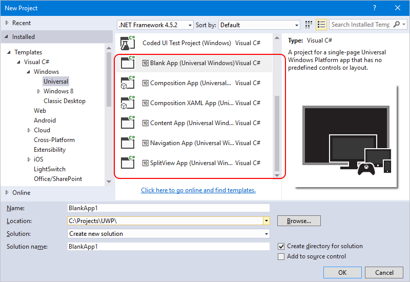

Intense
Controls, templates, and tools for building Universal Windows Platform apps on Windows 10. The Intense toolkit consists of two parts; a library of controls and helpers distributed as NuGet package, and a Visual Studio extension with project templates for creating new UWP apps.
Intense Templates
Adds new project and item templates to Visual Studio 2015 for creating Universal Windows apps. The templates are available in both C# and Visual Basic flavors.
The following templates are included;
Installation
Download the VSIX installer from the Visual Studio Gallery. Alternatively, search for intense in the Extensions and Updates dialog in Visual Studio 2015.
Once installed the templates are available in the New Project dialog in Templates > Visual C# (or Visual Basic) > Windows > Universal. Intense templates are prefixed with the 🔟 symbol, so they stand out in the crowd.
